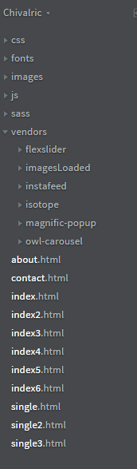
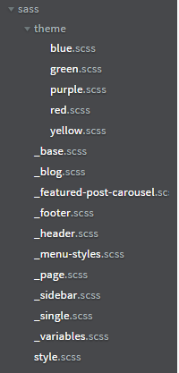
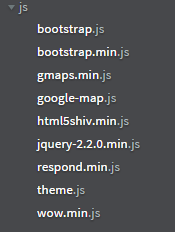
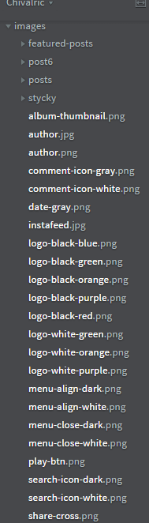
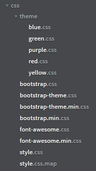
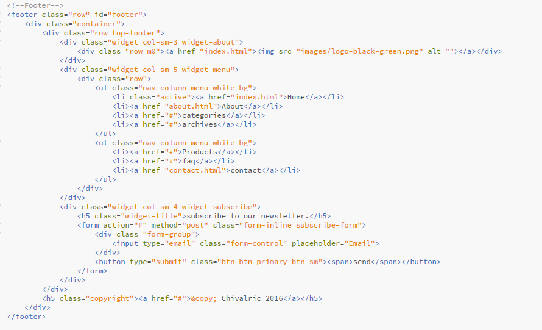
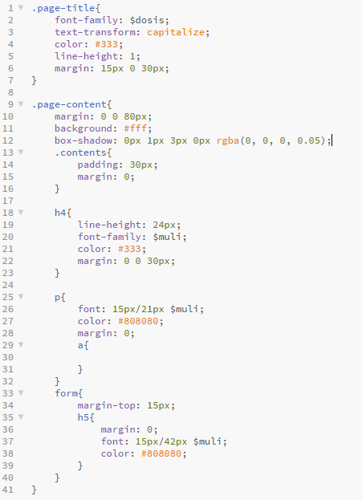

Chivalric is a stylish Blog and Magazine template. It comes with 6 Homepage Variations and 3 Single Post Variations
The template features are made for blog design. This template has 6 different homepage to represent blog styles. This has two type of featued post slider and has Sticky posts Section designed.
This template made with the help of Twitter Bootstrap 3.3.6 and SCSS as CSS preprocessor. We make 5 different color stylesheets. They will help you choose color. You can see our color example in 6 homepages.
You can make your own color version easily by any SCSS stylesheet. Just you need two color (or may three) codes. For editing or changin help look at http://sass-lang.com/
We use google fonts for text design. And some of jquery plugin listed below:
Our file structure as listed:
Root:

Sass:

JS:

Images:

CSS:

Our HTML is wel structured and clean. As example there is our footer:

Our SCSS Structure:

We add Instafeed JS to our tempalte to show instagram feed on our template.
You need your own instragram user id and access token to display your feed. Details documentation will found on http://instafeedjs.com/
Support links:
Thanks for purchasing our template. Make a comment on comment section to get more help.